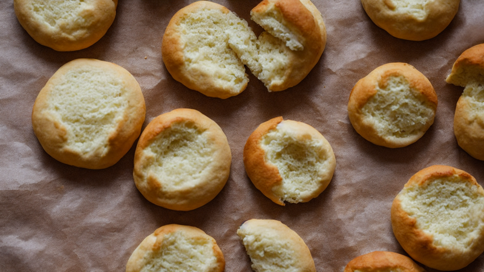
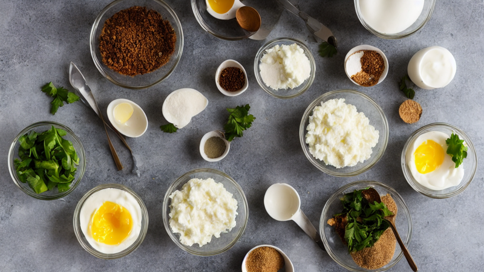
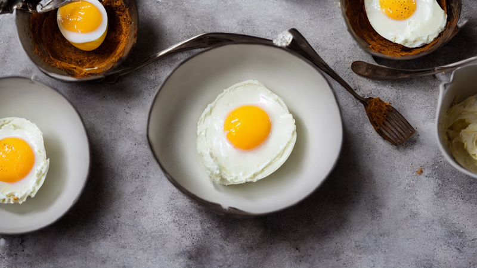
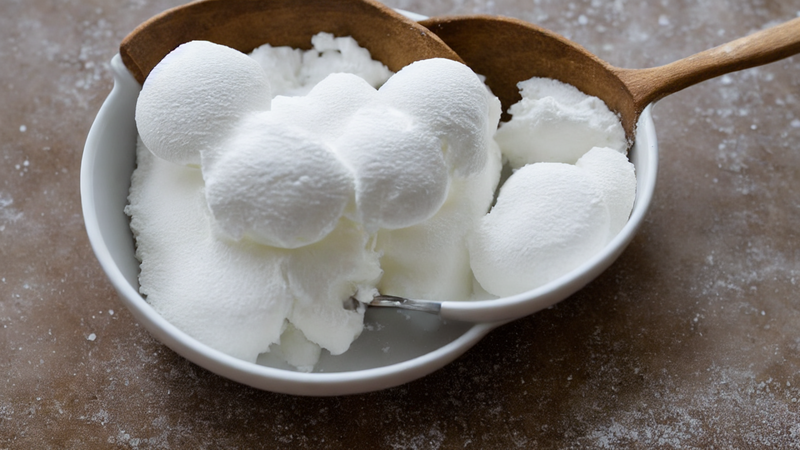
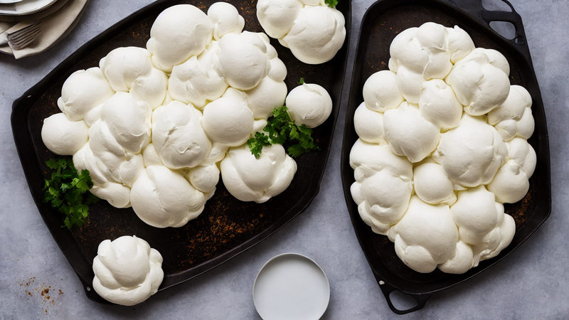
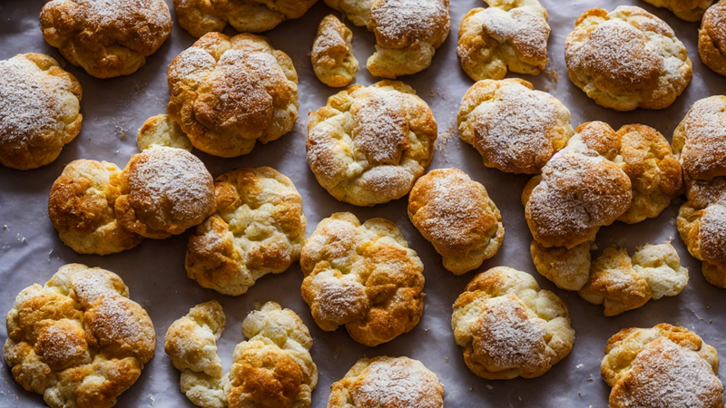

3-Ingredient Cloud Bread | Fluffy, Pillowy & Totally Addictive
This viral Cloud Bread is impossibly fluffy, slightly sweet, and melts in your mouth like cotton candy. With just 3 ingredients and 25 minutes, you'll have the most photogenic bread the internet has ever seen. Gluten-free and low-carb too! #CloudBread

This Cloud Bread is the fluffiest, most pillowy thing you'll ever bake. Only 3 ingredients, no flour, and it literally melts in your mouth. Let's make it!

All you need is: 3 egg whites, 2 tablespoons of sugar, and 1 tablespoon of cornstarch. That's it. Three ingredients for pure magic.
Separate the eggs carefully. You need zero yolk in your whites, or they won't whip properly. Place the egg whites in a large, clean, dry bowl.

Beat the egg whites with an electric mixer on high speed for about 2 minutes until they reach stiff peaks. They should be glossy and hold their shape when you lift the beaters.

Gently fold in the sugar and cornstarch with a rubber spatula using slow, sweeping motions. Do not stir or you'll deflate the meringue. Fold until just combined.

Scoop the mixture onto a parchment-lined baking sheet and shape it into a thick, round cloud about 8 inches wide and 2 inches tall. Keep it puffy and domed!

Bake at 300 degrees Fahrenheit for 25 minutes until the outside is set and lightly golden. It should feel firm on the outside but still be marshmallow-soft inside.
Let it cool for 5 minutes on the baking sheet. Then tear into it and listen to that satisfying crackle. The inside is like a cloud of cotton candy!
Follow for more viral recipes that actually work. This one's gluten-free, low-carb, and absolutely addictive. You've been warned!